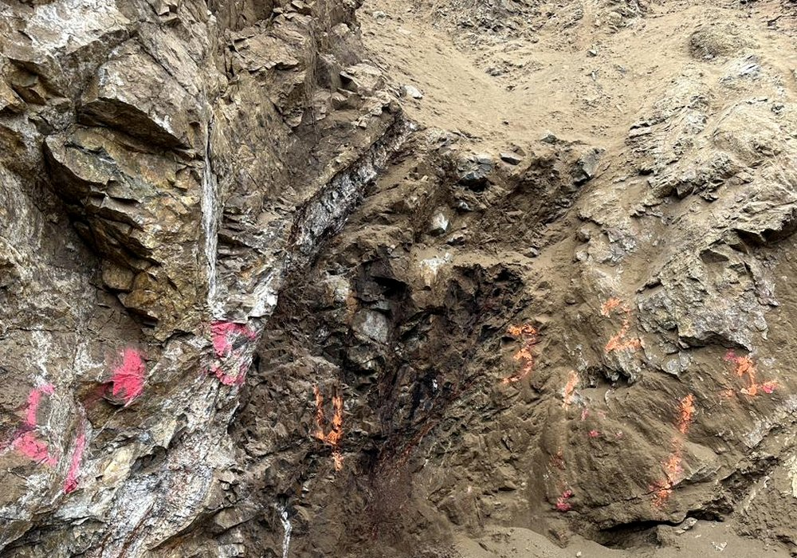

Samples collected by Humboldt Mining personnel and consulting geologists have been submitted to accredited independent laboratories for fire-assay gold determinations and multi-element ICP analysis. Splits of selected samples have been cross-checked through independent umpire-assay work. Detailed certificates, sample location maps, and per-sample results are available to qualified parties under confidentiality.

| Vein samples | Underground and surface vein exposures |
| Channel samples | Vein and wall rock, sampled separately |
| Adit samples | Material from historic underground workings |
| Dump samples | Historic mine-dump material |
| Bulk metallurgical samples | Selected composites for processing testwork |
Historic dump material. Mine-dump material from prior operating periods is heterogeneous in grade. Sampling and screening prior to any shipment is required to establish representative bulk grade for commercial purposes.
Newly mined material. Material from controlled vein exposure is mucked in dedicated rounds, bagged, and tracked at lot level. Paired assay splits are retained for buyer cross-check prior to shipment.
Underground mapping by consulting geologists produced 3D vein and drift models of the principal vein structures identified in the workings. Channel samples are collected across vein and adjacent wall rock separately to support dilution-aware mine planning. Specific vein widths, grades, and structural detail are available to qualified parties under confidentiality.
Metallurgical testing has been conducted by an independent metallurgical laboratory to evaluate gold and silver recovery characteristics from selected Humboldt Mining samples. The program included head assay, gravity concentration, gravity-tailings cyanidation at multiple grind sizes, and environmental characterization on selected samples per applicable procedures.
Bulk samples from selected locations were prepared and tested under standard procedures, including stage crushing, Knelson gravity concentration, and bottle-roll and agitated cyanidation testwork. Carbon and sulfur speciation, and multi-element ICP analysis, were conducted to support process and environmental evaluation.
Selected samples demonstrated amenability to gravity concentration and cyanidation testing on the material tested. Recoveries varied by sample and grind size. Visible free gold was observed in gravity concentrates from selected samples.
Per-sample head grades, gravity concentrate grades, cyanidation recoveries, reagent consumption, and environmental characterization data are available to qualified parties under confidentiality.
The independent laboratory report recommends larger-mass composite testing on representative production blends, additional bottle-roll testing on coarser size fractions to support direct-shipment evaluation, solution-chemistry work to optimize reagent dosing, and continued environmental characterization on additional sample types.